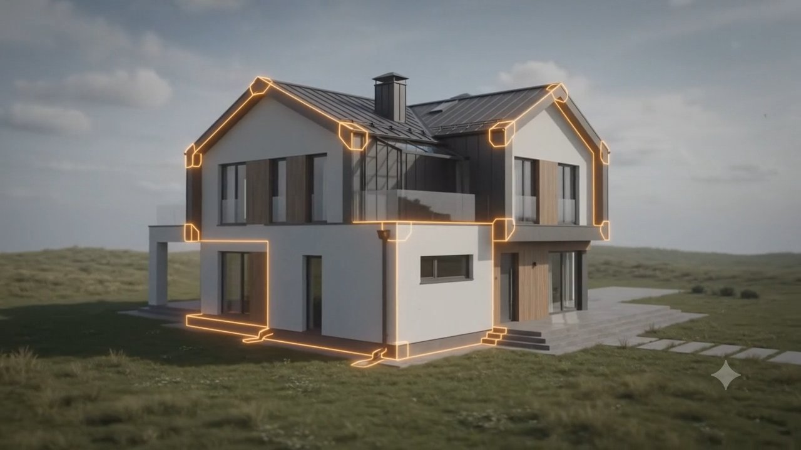
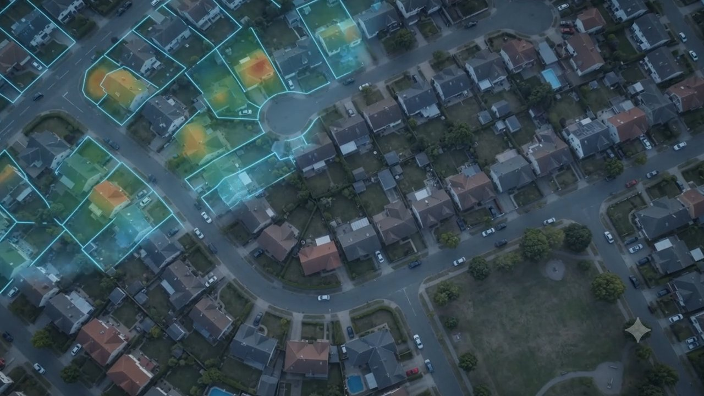
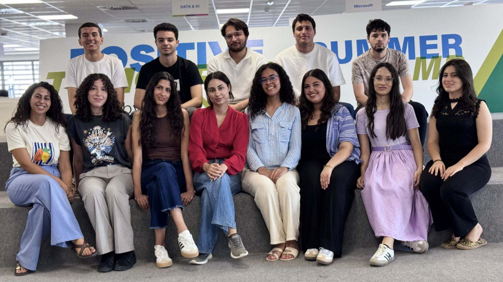

Heatmap 3D par composant
Chaque couleur traduit immédiatement le niveau de vulnérabilité du bâtiment.
FaibleSituation maîtrisée
ModéréVigilance recommandée
ÉlevéAdaptation prioritaire
CritiqueAction immédiate
Typhoon analyse l'exposition actuelle et future de vos biens aux aléas climatiques (inondation, sécheresse, RGA) et propose des recommandations de travaux pour anticiper les sinistres.
Aujourd'hui, le risque climatique d'un bien est rarement évalué au moment où il compte vraiment : à la souscription, au financement, à la construction. Typhoon comble ce vide en croisant données bâtimentaires et climatiques pour produire, en quelques minutes, un diagnostic clair et exploitable, pas juste un chiffre, mais une explication.
Pour les banques et assureurs, cela agit comme un zonier à la granularité la plus fine possible, celle du bien immobilier. Typhoon éclaire la décision et vient nourrir vos propres modèles.
Pour les promoteurs et agents immobilier, c'est la possibilité d'intégrer le risque climatique dès la construction du bien en repérant les points de vulnérabilité ce qui constitue un argument de vente.
De la compréhension immédiate au passage à l'action, chaque écran réduit la distance entre risque climatique et décision immobilière.
Chaque couleur traduit immédiatement le niveau de vulnérabilité du bâtiment.
Explorez les aléas présents autour du bâtiment.

Des recommandations classées pour passer immédiatement à l'action.
Interrogez votre diagnostic en langage naturel.
Une adresse précise à instruire, ou tout un secteur à prospecter — Typhoon s'adapte à la décision que vous devez prendre.

Une adresse précise. Jumeau numérique 3D, score de risque zone par zone et simulateur « si je fais ces travaux ». Le mode qui convainc un assuré, un emprunteur ou un acquéreur.

Une zone géographique entière. Vue carte, tri et filtre par score de risque. Le mode décision rapide, pour repérer en un coup d'œil les biens et parcelles les plus résilients d'un secteur.
Pour répondre aux exigences strictes des banques, des assureurs et des institutions européennes en matière de sécurité, de conformité et de souveraineté des données, l'architecture de Typhoon repose sur les modèles de Mistral AI.
L'IA génère des plans d'action pour renforcer la résilience climatique du bien. Pour garantir la fiabilité et éliminer les hallucinations, elle exploite exclusivement une base documentaire interne via un système RAG.
Un chatbot contextuel répond aux questions de l'utilisateur sur les risques et les recommandations principales, pour guider sa démarche pas à pas.
Chaque diagnostic Typhoon s'appuie exclusivement sur des sources publiques et expertes reconnues.
Année de construction, matériaux, surface, usage, performance énergétique : la BDNB documente la vulnérabilité intrinsèque de chaque bâtiment français.
Le programme européen d'observation climatique fournit les données historiques et les projections utilisées pour estimer précipitations, sécheresses et événements extrêmes — aujourd'hui et à horizon 2050.
L'intégration des données officielles pour qualifier l'exposition contextuelle des biens par zone géographique et par type de risque.
Ces sources expertes alimentent notre base de connaissances pour formuler des recommandations de travaux normées, réalistes et adaptées aux réalités du secteur.
Notre méthodologie de calcul du risque s'appuie sur les standards académiques et les avancées récentes de la recherche, telles que documentées dans l'étude A Modeling Study of Insurance and Real Estate Risk Assessment in the Context of Global Climate Change, Lianshu Peng & al.

Découvrez comment Typhoon peut transformer la lecture climatique de votre portefeuille immobilier.
Réservez une démo gratuite de notre plateforme : c'est simple et sans engagement.
Nous vous contactons à la date souhaitée pour analyser vos besoins spécifiques.
Nous détaillons vos besoins et sélectionnons les indicateurs pertinents pour votre activité.
Nos sources de données


Indiquez simplement l'adresse du bien. Notre orchestrateur IA récupère automatiquement toutes ses caractéristiques via la BDNB, Géorisques et Copernicus — aucune saisie manuelle n'est nécessaire.
Sélectionnez les travaux que vous souhaitez engager. Chaque travaux réduit l'exposition climatique de votre bien et augmente votre éligibilité à la certification Climato-Résilient Typhoon, ouvrant droit à une prime sur votre cotisation d'assurance.
—
Le score global agrège l'exposition de chaque zone du bien aux différents aléas climatiques. Utilisez le radar pour visualiser en un coup d'œil l'équilibre — ou le déséquilibre — des risques entre zones.
Actions correctives et préventives issues du diagnostic, classées par ordre de criticité pour prioriser vos investissements et maximiser le gain de résilience de votre bien.
L'assistant s'appuie sur le diagnostic réel de ce bien (scores, zones, recommandations) pour répondre à vos questions.